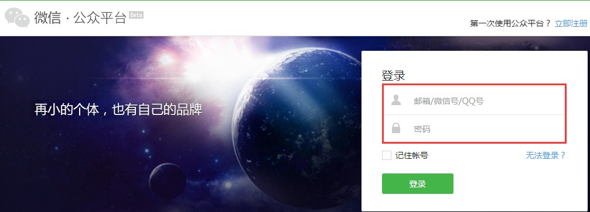
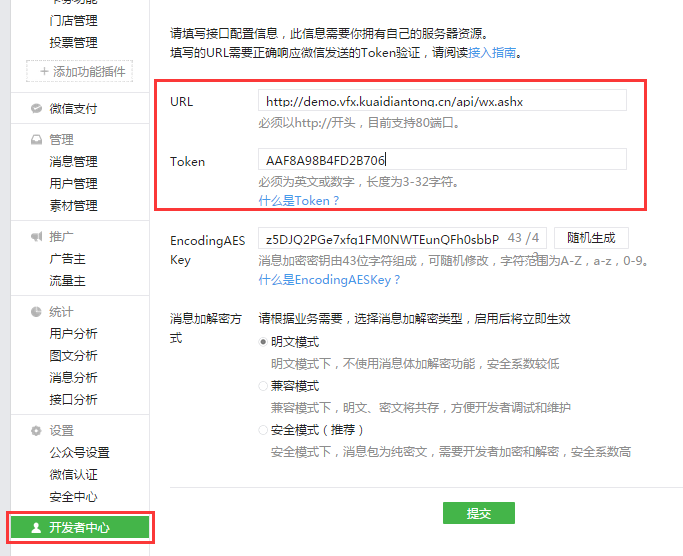
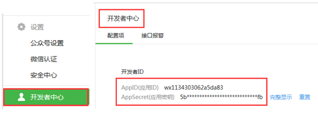
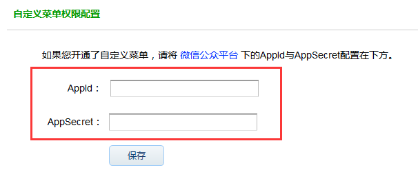

步骤1、点击【微信公众平台】，跳转到微信公众平台https://mp.weixin.qq.com/。
步骤2、登录微信公众平台后，在左侧树状菜单栏最下方点击【开发者中心】，在配置项栏里找到URL和Token，将这两项内容分别复制粘贴上去，点击【提交】即可。
步骤1、登录微信公众平台后，在左侧树状菜单栏最下方点击【开发者中心】，在配置项栏里找到AppID和AppSecret，将这两项内容分别复制。
步骤2、回到平台管理后台—微信公众号，将AppID和AppSecret这两项的内容分别粘贴或输入进去，点击【保存】，即会提示“保存微信配置成功”。
